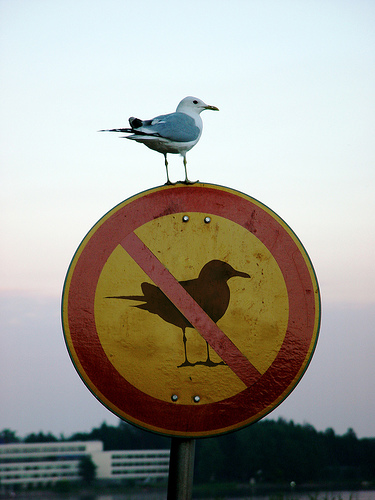

The previous publications have been great and we shall keep continuously strive for better performance. But this time we plan to launch with a bang and for that we need your help.
Welcome to an incredible sea of opportunities. There is nothing better to define learning on the job than working with us. Because we are a small team, each new recruit will be assigned tasks immediately, you can pick up any of the projects we are working on or take up something new on your own. You shall not be confined to any particular cell, you can take parallel work according to your interests and capabilities and see your skills grow. We are friendly people with free flowing pockets, so remember to take lots of chapos.
Cheers! And all the best!
Hoping to see you soon.
1. Write about yourself.
2. Write an article on any ONE of the given topics:
a. Feminism is a movement of equal rights for men and women. But people take different meaning out of it and some are misusing it too. Here are some responses of college girls on recent Jasleen Kaur's case : "She is hurting feminism by misusing those rights."; "You're a girl and I'm a girl, and now people won't trust me also."; "Please don't make it difficult for other girls just for your publicity!". What does feminism mean to you? What is your take on Jasleen Kaur's case? Write in about 200 words.
b. Tell us about the fantasy world which you have always thought of in your childhood and have always wished if it could be a reality. It could be anything like a fairy world, Noddy's Toyland or Chhota Bheem's Dholakpur! Write in word limit of 150-200 words.
c. A picture is worth a thousand words. What we read in hundreds of words, a picture can tell it in a matter of seconds. Here, a picture is given to you. Deduce a theme out of it and write an article in 150-200 words. PS: Click on it to have a better view.
There shall be On-the-spot Group Discussion round and then a Personal Interview round.
Please fill the form given in the link, we shall contact you for the Group Discussion round, and Personal interview round to be held on 2pm to 6pm Saturday, 5th September and Sunday, 6th September.
Feel free to contact us if you have any queries. Contact: Anshika Maheshwari, 7417113636.
1. Make a color palette that best describes following themes: Vintage, Life-death and Feminism.
2. Make a logo for IIT Heartbeat or Cultural Society, IITR.
3. Make a comic strip showing the Electoral period of IITR.
or3. Make a poster showing difference between gender equality and feminism.
There shall be Technical Interview and then a Personal Interview round.
Please fill the form given in the link, we shall contact you for the Technical round, and Personal interview round to be held on Saturday, 5th September and Sunday, 6th September.
Feel free to contact us if you have any queries. Contact: Vaibhav Raj, 9756574602.